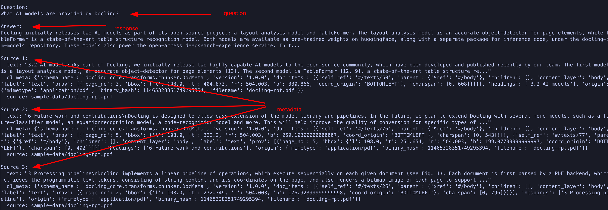

Lab: Data Preparation for RAG
In this lab, you will use Docling to convert input documents and augment the response from an LLM by assembling a RAG pipeline using the Milvus vector database and the LangChain framework.
Pre-requisites
-
The Docling Python library must be installed as outlined in the previous sections using
pipin a Python virtual environment -
Git CLI to clone the sample data files from GitHub
-
Visual Studio Code, or other editors to edit Python code
-
LangChain bindings for Docling, Milvus, and ollama
-
You will run an embedded instance of the Milvus vector database using LangChain bindings
-
ollama runtime to run the inference engine (IBM Granite model)
-
Install ollama for your platform and start it by following the instructions at https://ollama.com/download
-
-
Numerous other utility Python libraries using
pip installcommand
Steps
-
If you have not already done it, clone the Git repository containing the sample documents that should be converted, to a folder of your choice.
$ git clone https://github.com/RedHatQuickCourses/genai-apps.git -
All the sample input files and code is in a folder called
dataprep. Change to this folder in the terminal.$ cd genai-apps/dataprep -
If you have previously created a virtual environment and installed Docling, activate the venv.
$ source venv/bin/activateYour prompt should change to indicate that you are now running in an isolated virtual environment.
-
A
requirements.txtfile is provided in the Git repository listing all the dependencies needed for this lab. Install all the needed dependencies usingpip install. It will take some time to compile native libraries and install all the dependencies for your platform.$ (venv) pip install -r requirements.txt -
Inspect the
rag-chain.pyfile in VS Code. We will use two different models in this lab. Thesentence-transformers/all-MiniLM-L6-v2model is specifically defined to convert text into vector embeddings. You can use other models (all-mpnet-base-v2,text-embedding-ada-002etc) depending on your use case. We use IBMsgranite-3.3model for answering queries.... EMBEDDING_MODEL = "sentence-transformers/all-MiniLM-L6-v2" INFERENCE_MODEL="granite3.3:2b" ... -
Let us run the
granite-3.3model and ask it some questions about Docling. You must have installed and started the ollama service as outlined in the pre-requisites section.$ ollama run granite3.3:2b ... >>> What AI models are provided by Docling? Docling currently offers an AI-powered document management system called Docling AI. This platform utilizes advanced machine learning algorithms to automate and enhance various document-related tasks, including: ... Docling AI continually learns from user interactions and refines its algorithms, enhancing accuracy and efficiency over time. ...The response is not exactly what we wanted. It did provide some details about Docling with some hallucinations (There is no such thing as Docling AI). We can improve the response by feeding the LLM information about Docling that is contained in a PDF document.
-
The input document
sample-data/docling-rpt.pdfcontains our private knowledge base that we will convert into embeddings and store in the Milvus vector database.... FILE_PATH = ["sample-data/docling-rpt.pdf"] ... -
We also declare a number of constants at the top of the file as follows:
... EXPORT_TYPE = ExportType.DOC_CHUNKS (1) QUESTION = "What AI models are provided by Docling?" (2) PROMPT = PromptTemplate.from_template( (3) "Context information is below.\n---------------------\n{context}\n---------------------\n" "Given the context information and no prior knowledge, answer the query.\n" "Query: {input}\nAnswer:\n", ) TOP_K = 3 (4) MILVUS_URI = "/tmp/docstore.db" (5) ...1 Tell Docling to convert the input document into chunks. LangChain can directly work with doc chunks instead of Markdown 2 Our input prompt (Same as what we asked ollama directly without RAG) 3 Providing extra context to the LLM, telling it to answer questions based on the context provided with no pre-conceptions. You can be as detailed as you want with the prompt to get better results 4 The Milvus vector database returns multiple results based on similarity search. Return the top 3 results of the vector search 5 Path to the Milvus database in embedded mode. In production, you will probably run Milvus as a separate network process and you will use the Milvus client libraries to connect to it. -
We start off by converting the input PDF document into smaller chunks. Rather than use Docling’s
DocumentConverterdirectly, we use the convienience wrapper methods provided by the LangChain framework, which has native Docling bindings and internally uses the Docling library classes:... # convert PDF to smaller chunks of text loader = DoclingLoader( file_path=FILE_PATH, export_type=EXPORT_TYPE, chunker=HybridChunker(tokenizer=EMBEDDING_MODEL), (1) ) docs = loader.load() (2) ...1 Use the Docling HybridChunkerwith thesentence-transformers/all-MiniLM-L6-v2embedding model to create chunks2 Convert the input PDF document chunks into a LangChain specific list of Documentobjects that can be stored in a vector database. See https://python.langchain.com/docs/integrations/document_loaders/docling for more details -
We next convert the individual chunks into vector embeddings using the specialized
sentence-transformers/all-MiniLM-L6-v2model.... # Convert chunks into Vector embeddings embedding = HuggingFaceEmbeddings(model_name=EMBEDDING_MODEL) ... -
We then store the embeddings into the Milvus vector database. Once again, LangChain provides us a nice wrapper to use Milvus.
... # Store embeddings in Milvus Vector DB vectorstore = Milvus.from_documents( documents=docs, embedding=embedding, collection_name="rag_demo", connection_args={"uri": MILVUS_URI}, drop_old=True ) ... -
Now that you have stored your knowledge base into the Vector database, you can now instantiate the LLM and prepare it for augmentation with the new information from the vector database.
# instantiate the inference model llm = OllamaLLM( (1) model=INFERENCE_MODEL ) # retrieve stored docs retriever = vectorstore.as_retriever(search_kwargs={"k": TOP_K}) (2)1 Use the LangChain ollama wrappers to run the IBM Granite model locally 2 Fetch the top 3 results of the vector similarity search -
It’s finally time to let LangChain work it’s magic. It sends the input prompt to the LLM and fetches the response.
question_answer_chain = create_stuff_documents_chain(llm, PROMPT) rag_chain = create_retrieval_chain(retriever, question_answer_chain) resp_dict = rag_chain.invoke({"input": QUESTION}) -
The response is a Python dictionary with results containing the textual response, plus metadata about which section in the input document was used to answer the query. The actual textual response is stored in a Python dictionary with a key named
answer. The input question is similarly stored under a key namedinput... clipped_answer = clip_text(resp_dict["answer"], threshold=500) print(f"Question:\n{resp_dict['input']}\n\nAnswer:\n{clipped_answer}") ...You can uncomment the pprint.pprint(…)line to dump the raw response from the LLM. -
Finally, metadata about the response (which input docs contained the answer, which section etc) is stored under a key named
context. We enumerate over this object and dump the metadata in JSON format to the terminal... for i, doc in enumerate(resp_dict["context"]): ... print(f" text: {json.dumps(clip_text(doc.page_content, threshold=350))}") for key in doc.metadata: ... ... -
Run the program. You can safely ignore any warnings and exceptions emitted. Notice the substantially improved response based on the input documents, along with metadata identifying the sources and location of the information contained in the response.
$ (venv) python3 rag-chain.pyFigure 1. Response after RAG